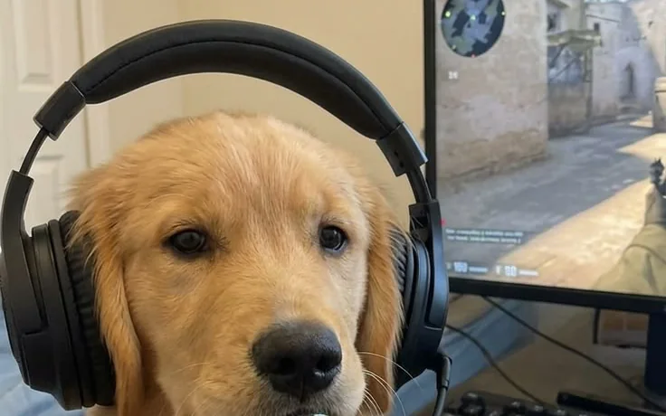
Prezentări de la materii
Teme de seminar transformate în site-uri: fiecare cu designul, sunetul și animațiile lui.
Producție Multimedia · FJȘC · USM
toate construite de mine, fără șabloane ;)
salut, eu sunt Sorin!
Sorin Hodoroja
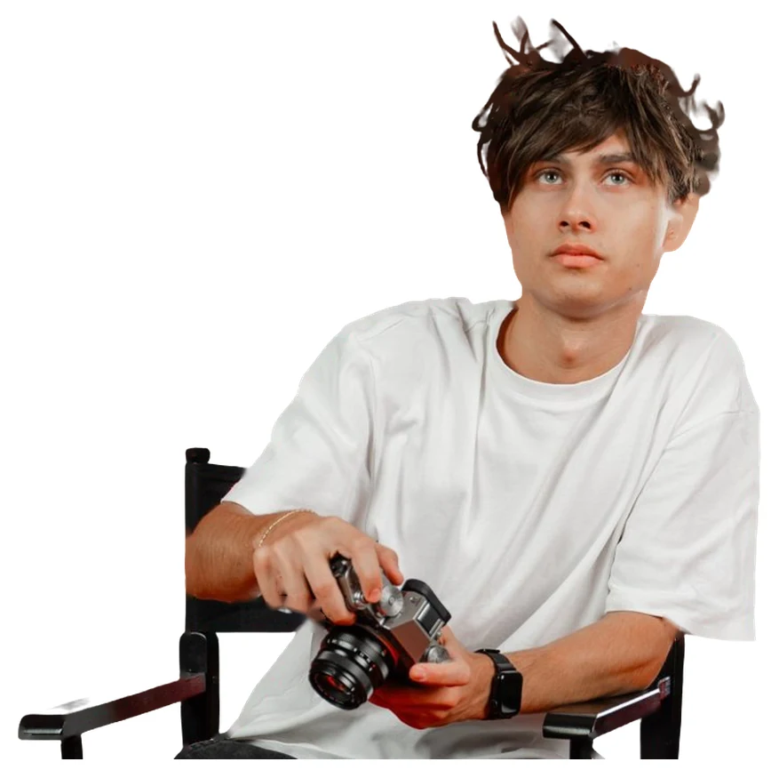
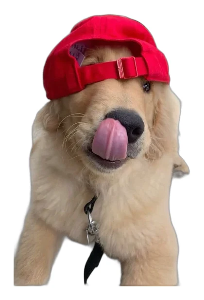
locul unde proiectele de la facultate devin site-uri, slide cu slide.
Ce e pagina asta?
Aici adun proiectele mele de la Facultatea de Jurnalism și Științe ale Comunicării, USM, specialitatea Producție Multimedia. De la Canva am trecut la o arhivă online de prezentări și proiecte.
Vezi proiectele ↓
Teme de seminar transformate în site-uri: fiecare cu designul, sunetul și animațiile lui.
Scenarii, storyboard-uri, animatice și filmări cu colegii.
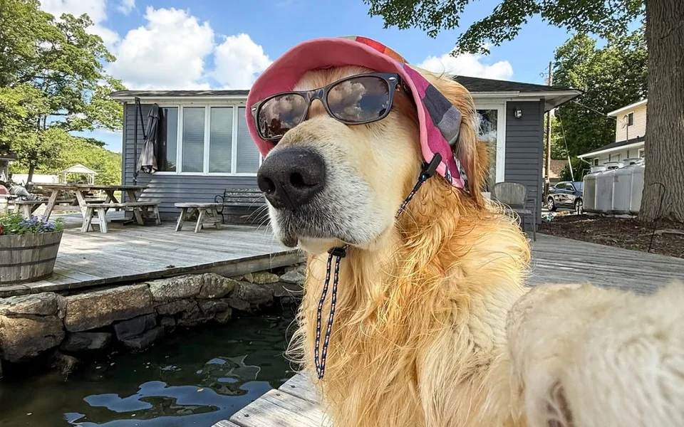
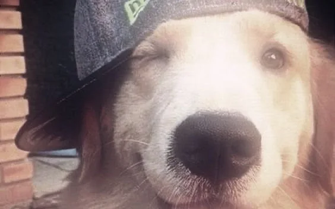
Concursuri și festivaluri studențești, challenge-uri creative de 24 de ore, after movie-uri de la evenimente și experimente cu AI.
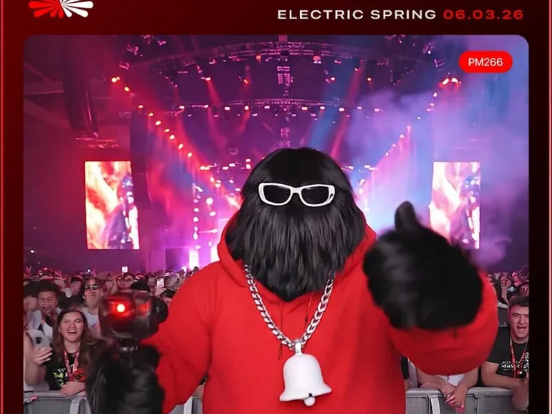
Managementul Experienței · personaj și card animat
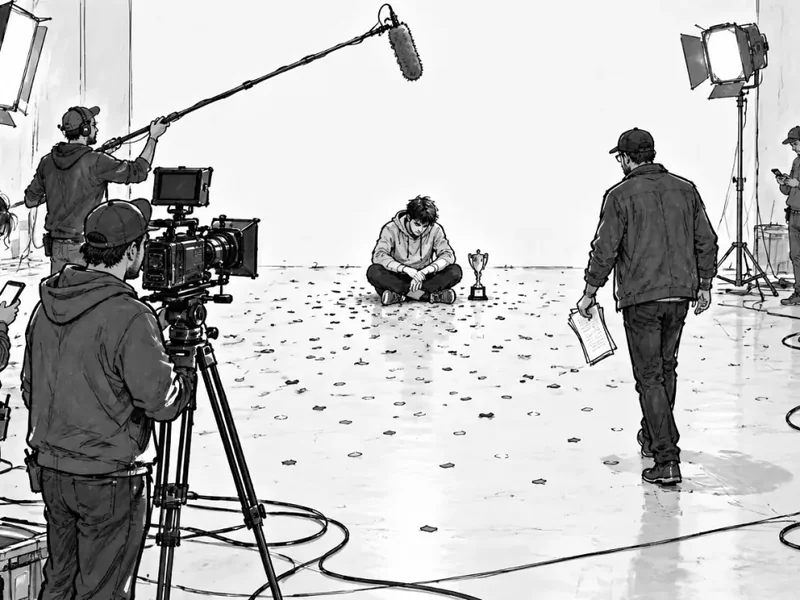
Scenariu, personaje și storyboard · ~13 min
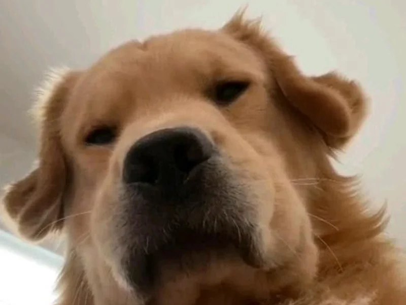
Bazele Designului · rebranding & brandbook
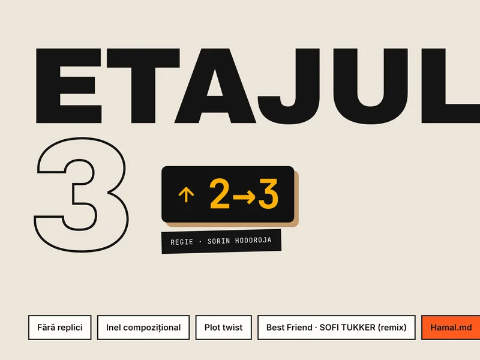
Reclamă · efectul fluture
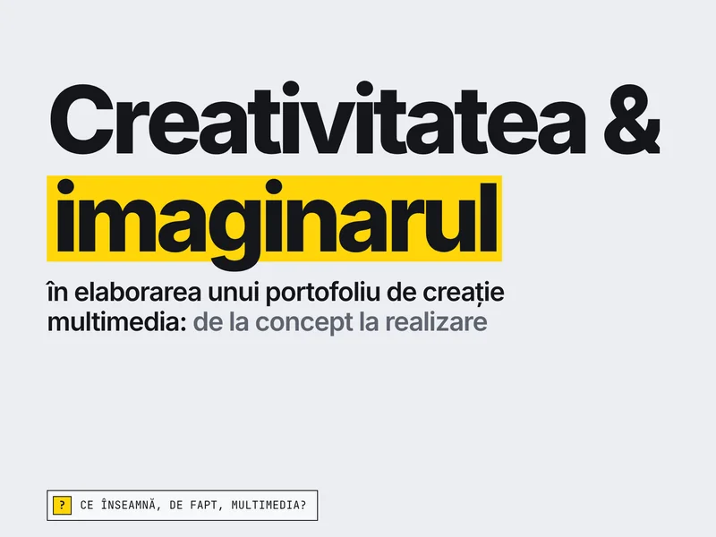
Colocviul științific „Coduri și limbaje actuale ale imaginarului” · 20.11.2026
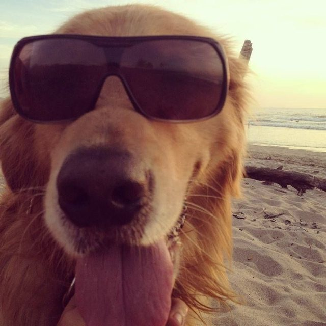
Regizorul e încă la filmări. Revino la sfârșitul semestrului.
Majoritatea proiectelor sunt deschise oricui. Câteva au parolă: au actori reali sau sunt încă în lucru.
Prezentările de la materii și proiectele pe care le pot arăta oricui. Un click și ești înăuntru.
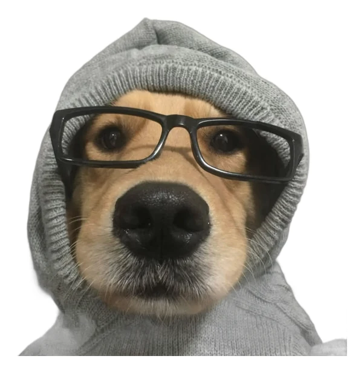
Proiecte cu actori reali sau încă în lucru. Parola o primesc colegii din grupă și profesorii care evaluează.
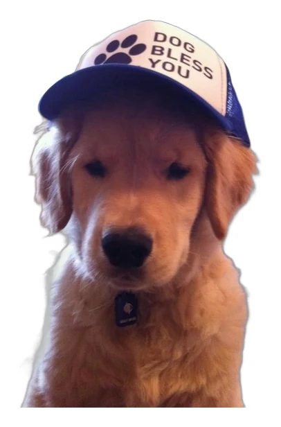
Citește înainte să copiezi
Fiecare proiect de aici a pornit de la o temă primită la o materie. Le public ca să le vadă colegii, profesorii și oricine e curios. Nu e un regulament, ci o înțelegere între oameni care fac lucruri:
Vrei să folosești ceva sau doar să întrebi cum am făcut? Scrie-mi la contact@sorinarseni.com